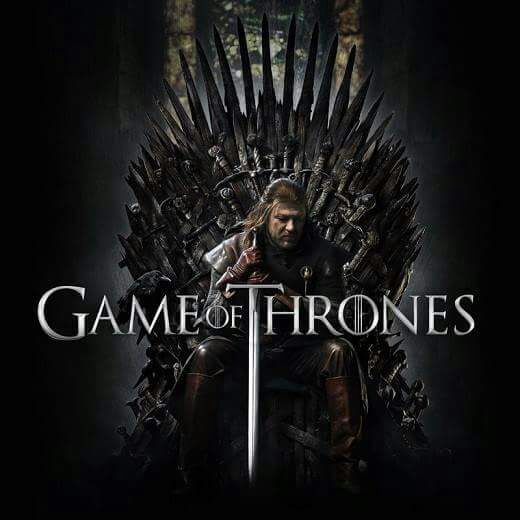

Valar Morghulis
{kind=link}
Game of Thrones (Game of Thrones no Brasil e A Guerra dos Tronos em Portugal) é uma série de televisão norte-americana criada por David Benioff e D. B. Weiss, e baseada na série de livros A Song of Ice and Fire, de George R. R. Martin. Game of Thrones é gravado no Canadá, na Croácia, na Islândia, na Malta, em Marrocos, na Espanha, no Reino Unido, nos Estados Unidos e na República da Irlanda. A primeira temporada da série estreou em 17 de abril de 2011. Até agora, 6 temporadas já foram exibidas, com a sétima temporada programada para estrear em 16 de julho de 2017.Segundo a HBO, a oitava temporada será a última. Muito aguardada desde seus primeiros estágios de desenvolvimento, Game of Thrones foi muito bem recebida pela crítica especializada. Sua primeira temporada foi indicada em vários prêmios, incluindo o Emmy do Primetime de melhor série de drama e o Globo de Ouro de melhor série dramática; Peter Dinklage, que interpreta Tyrion Lannister, venceu o Emmy do Primetime de melhor ator coadjuvante em série dramática e o Globo de Ouro de melhor ator coadjuvante em cinema. A série também conquistou o Emmy de melhor projeto de créditos principais, e possui uma das melhores notas entre os telespectadores para séries em exibição no site IMDb. Game of Thrones ganhou 38 Emmys, mais do que qualquer outra série de televisão. A série entrou para o Livro de Recordes como a série de drama com a maior transmissão simultânea ao redor do mundo. O número foi alcançado graças ao episódio 2 da quinta temporada, intitulado "The House of Black and White".Na sexta temporada da série, a emissora HBO decidiu produzir um talk show para Game of Thrones, chamado After the Thrones, assim como a emissora AMC fez com a série Breaking Bad, produzindo um talk show chamado Talking Bad. Com o mesmo formato de Thronecast e Talking Dead, o programa After the Thrones apresenta recapitulações, comentários e teorias de Game of Thrones e é exibido nas segundas-feiras pela HBO Now, HBO Go, HBO on Demand e pela própria emissora HBO.
Sinopse
Há muito tempo, em um tempo esquecido, uma força destruiu o equilíbrio das estações. Em uma terra onde os verões podem durar vários anos e o inverno toda uma vida, as reivindicações e as forças sobrenaturais correm as portas do Reino dos Sete Reinos. A irmandade da Patrulha da Noite busca proteger o reino de cada criatura que pode vir de lá da Muralha, mas já não tem os recursos necessários para garantir a segurança de todos. Depois de um verão de dez anos, um inverno rigoroso promete chegar com um futuro mais sombrio. Enquanto isso, conspirações e rivalidades correm no jogo político pela disputa do Trono de Ferro, o símbolo do poder absoluto.
1ª Temporada (2011)
A série se inicia quando Ned Stark é convidado para se tornar o principal conselheiro (conhecido como a Mão do Rei) do luxurioso Rei Robert Baratheon. Ned e sua esposa, Catelyn, recebem uma carta da irmã de Catelyn, Lysa, que lhes dá motivo para acreditar que seus rivais, a Casa Lannister—à qual a esposa do rei, Cersei, faz parte—causaram a morte da Mão do Rei anterior. Ned deve ir para o sul para ajudar o rei e descobrir quem matou a antiga Mão do Rei, Jon Arryn, enquanto tentava proteger sua família dos Lannisters. Enquanto tenta descobrir os motivos por trás da morte de Jon Arryn, Ned descobre os segredos obscuros dos Lannisters, os quais Jon Arryn morreu tentando expor.
2ª Temporada (2012)
Os Sete Reinos estão em guerra, com o Rei no Norte, Robb Stark, lutando para ganhar a independência para seu povo e para o povo das Terras Fluviais. Robb percebe que precisa ganhar a fidelidade dos Nascidos do Ferro, que são ferozmente independentes, para sua causa, e envia seu melhor amigo, Theon Greyjoy, para conversar com seu pai, que está armando planos para seu próprio benefício. Enquanto isso, Joffrey Baratheon assume o Trono de Ferro com o apoio da poderosa Casa Lannister, mas seu tio, Renly, também reivindicou o trono com o apoio da Casa Tyrell, cujos exércitos são muito maiores. Enquanto eles lutam pelo trono, Tyrion Lannister chega em Porto Real para tomar as coisas para si próprio, mas acaba enfrentando a oposição de sua intrigante irmã, Cersei, que agora é Rainha Regente.
3ª Temporada (2013)
O outono chegou em todo o mundo, com o inverno não muito atrás. O povo precisa se preparar para anos de neve e gelo, mas, em vez disso, os Sete Reinos de Westeros permanecem presos pela guerra civil. O suposto Rei Renly Baratheon é assassinado, o que altera as alianças na guerra. O cruel Rei Joffrey Baratheon conquista uma grande vitória ao garantir uma aliança com a Casa Tyrell, com seus apoiantes derrotando seu tio Stannis em uma batalha épica. Agora, Joffrey comanda os maiores exércitos do reino e seu triunfo parece ser inevitável.
4ª Temporada (2014)
Nos Sete Reinos, enquanto a Casa Stark está à beira da extinção—ou, pelo menos, é o que o reino, em geral, acredita—, quatro "lobos solitários" lutam para sobreviver. Sansa Stark continua sendo refém do Trono de Ferro e é forçada a se casar com Tyrion Lannister. Rickon Stark procura a segurança da Última Lareira e da ferozmente leal Casa Umber. Bran Stark e seus companheiros, Hodor, Jojen e Meera Reed, atravessam a Muralha perseguindo uma visão; enquanto Arya Stark, que perdeu tudo e foi forçada a depender da proteção de um homem que ela odeia, se apega à sobrevivência e à sua sede de vingança.
5ª Temporada (2015)
A Guerra dos Cinco Reis, que acreditava-se estar chegando ao fim, entra em uma nova fase e mais caótica. Westeros fica à beira do colapso, e muitos aproveitam o que podem enquanto o reino implode, como um cadáver fazendo uma festa para os corvos.
6ª Temporada (2016)
O inverno chegou. Westeros se prepara para um inverno que pode se tornar uma nova longa noite, enquanto os Caminhantes Brancos e seu exército de mortos estão prontos para atacar a Muralha e os reinos dos homens.